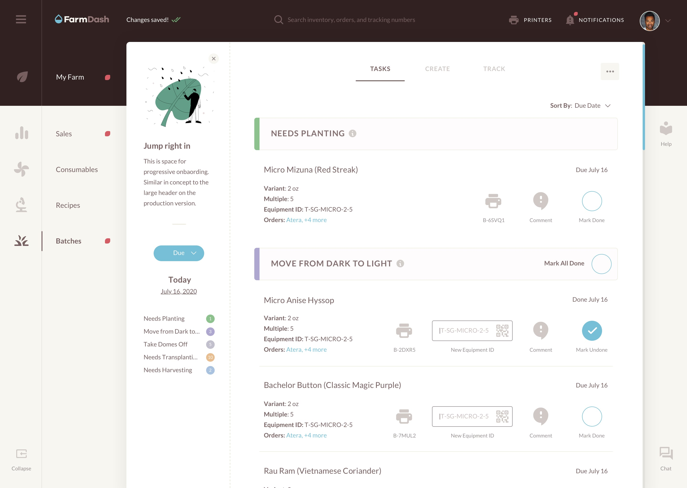
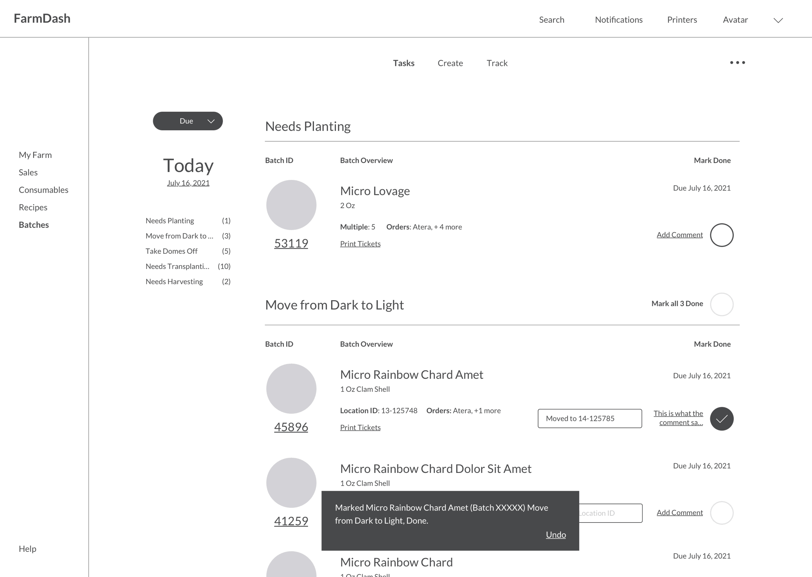

Fresh Thinking for an Indoor Farming Dashboard

My Role: UX, UI

Project Type: Web Application

FarmDash is a SaaS application built to run a hydroponic farm’s entire operations—that means, it’s indoors and completely soilless. I collaborated with FarmDash to help them tackle a variety of user experience challenges. Get ready for a deep dive.
FarmDash (name changed for privacy reasons) is software to help farms grow herbs, fruits vegetables, etc. in a soilless environment.
A major consideration FarmDash had was that they relied on many disparate interfaces to accomplish singular tasks, forcing the user to log in and jump from place to place. I worked hand-in-glove with FarmDash to streamline the overall experience. What we’ll cover here is my contribution to the user experience and subsequent interface design for a particular section within the interface called “Batches.”

Detail: Hi-fidelity redesign of the FarmDash Batches screen, and the associated tasks.
UX that blows haziness out of the water
An overview of Batches
A batch is a farm’s way to specify a group of crops. From supervisors to farmhands (people who manage crops,) running an indoor farm requires many roles. The UX I laid out structures the content in a way most convenient for farmhands as they navigate their day-to-day tasks managing batches of crops. Here’s the structure of the basic interface:
1. Main Navigation
Farmhands are able to track their inventory, consumables, sales and most anything else you can think of inside the app. Here I’ve indicated the primary items they need access to.
2. Secondary Navigation
The secondary navigation allows users to be more precise about what they’re looking to do. Here, the Tasks tab is active allowing the user to see and perform specific actions on a set of crops, a.k.a. a batch.
3. Batch Phases
Here are the steps a batch must go through as it matures. The crux of this page enables the farmhand to assess and performs tasks necessary to harvest a crop at the right time.
Detail: Farmhands print tickets from batches to affix to physical crops.
Detail: Viewing batch details shows every logged action it has undergone.
Comments help identify problems in real time
By default this screen is filled with tasks that need to be performed on a particular Batch. It was important to have a way to allow the farmhand to add information as they perform a task on a batch in case the recipe a crop is grown from requires modification—comments are later accessed by recipe scientists who in turn modify the algorithm associated with the timing for each batch task.
Completing tasks, and then some
A farmhand’s objective here is to progress each batch to the next phase of its lifecycle. There’s an area for the farmhand to add information, such as the location on the farm to which a crop will move, in addition to marking a task as Done by tapping the circle; a large hit area makes this more convenient as a farmhand is likely using a tablet out in the field while they perform tasks.

Ux that works hard, so users don’t have to
Batch creation for farmhands
Batches here are predicated on a set of rules that have been designated via the Batch Recommender—housed inside the ellipses menu. But, here is where batches are confirmed.
Creating a batch initiates its physical existence on the farm. And although it was an infrequent use-case, we still needed a way to enable farmhands to create a batch from absolute scratch. I achieved this by adding a button in the bottom right corner, taking a cue from Material Design’s floating action button.
Detail: Clicking Create Batch confirms the batch’s physical existence on the farm.
Minimizing monotony
The Batch Recommender is an easy way for farms to create batches that they regularly grow. So that the farmhand has an immediate understanding of what to do when they hit this screen, I included a prominent interaction prompting them to add their first batch recommendation.
Recommendations are based on a recipe, which is why creating a batch from absolute scratch isn’t likely. On this screen a farmhand can search for a recipe by entering its name. Then, they select the pertinent batch details like version number, multiple (quantity), and recommendation frequency. I also included a large toggle to disable a recommendation temporarily.
Detail: On desktop experiences. hovering over a row houses additional infrequent actions, like deleting a recommendation.
Maximizing margins
Since a farm has many batches growing in tandem it was important to be able to filter items via many criteria, and view what stage a particular batch was at. I envisioned a find-as-you-type filtering process, and displayed batch progress as charts. Together, these enable the farmhand to quickly and prominently see relevant/specific batch details.
Detail: A compact view enables farms with many batches faster oversight of crop statuses.

Detail: Housed inside the ellipses menu, a farm’s equipment usage is visually represented.
Fidelity you can see
The main focus of my involvement with FarmDash was to assess the user experience and provide a number of prototypes.
That said, I thought it was important that a component of the deliverables include higher fidelity design of at least one section. While this isn’t the main dashboard that a farmhand sees when they first log in, it’s a reasonable demonstration of the style and direction.
A little self reflection
This project was a good reminder of the importance of use-cases and personas.
Challenges
Not being intimately familiar with the process of growing crops and farming posed some challenges. I relied heavily on specifications from the team to understand a farmhand’s needs. From there I brought my UX know-how to dictate the appropriate interactions.
Lessons
It’s tough work collecting and extracting objectives from team members who aren’t readily acquainted with what a UXer contributes to a project, which extended the feedback loop. This project was a good reminder of the importance of use-cases and personas.
Up Next
A Web and iOS App to Unite Superfans & Superstars